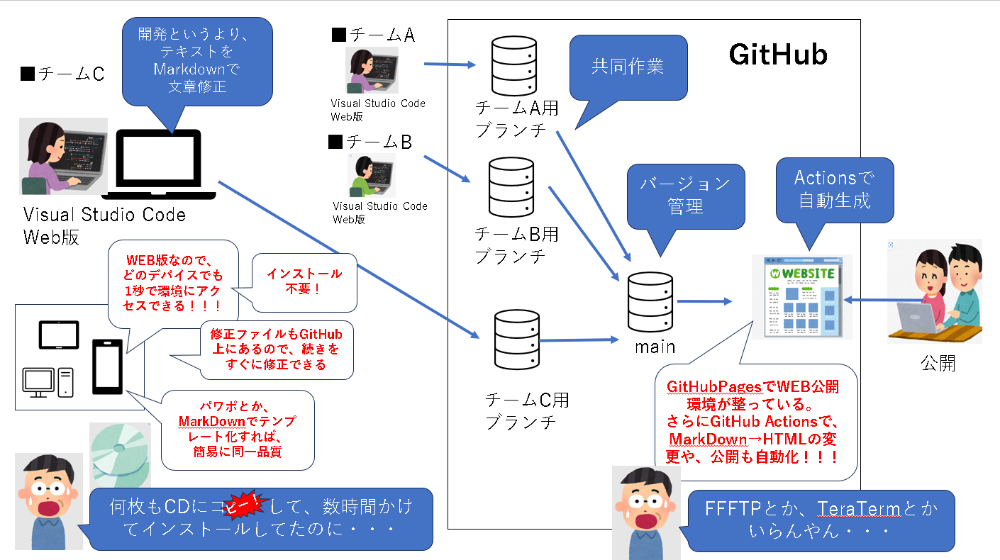

成果公開に向けたGitHub環境活用#
1. 目的#
できる限り簡潔に、「これだけあれば、これだけできる」を伝えたい
詳しい内容は、他のサイトを確認ください！
間違った知識も書いてるかもしれませんが、「事実としてこれができたよ」をお伝えします
2. 知識領域と概要#
GitHub
ソースコードの管理を行うクラウドサービス。共同で開発、ソースコードの管理が可能。
版管理してくれるので、プログラムだけでなく、パワポや文章の共同作業で使う人も。（今回、この目的で利用）
色々進化していて、WEBページとして公開までしてくれます。
Visual Studio Code(WEB版)
開発用アプリケーション。コードエディタ。
Git
もともと、ソース管理システムで様々なツールがあったっぽいですが、GitHubがデファクトになったっぽい
Visual Studio Codeから、GitHubにソースをアップロードしたりする時に使う「命令」として最低限の用語をお伝えします。
Markdown
HTMLみたいなもん。もっと簡易な奴。
Markdownで記載するとパワポに変換できたりする
4. 公開環境#

4. これだけ知っておけば！#
Git関連
GitHub リンク
リポジトリ repository
ファイルの保管場所。
開発するにあたり、ソースコードや画像など、様々なファイルを管理する必要がある。
この開発やプロジェクトごとの大きな保管場所の単位をリポジトリという。
自分のPC上にある保管場所をローカルリポジトリ。GitHub上にあるものをリモートリポジトリ。と言う。ブランチ Branch
GitHubでは、最初にMainブランチが作成される。
Mainにぶら下がるブランチを作ることで、Mainブランチやほかのブランチに影響をあたえず、開発を進めることができる
ブランチごとに進めていった開発を、最後に統合（マージ）していくことが必要
今回は、３チームにそれぞれブランチを作成し、最後に統合（マージ）して一つの成果物とした。コミット Commit
修正した内容を、Git上に反映させる行為。 Gitでは履歴が残るため、間違ってたり、大幅な修正が必要だった場合に戻せるのがミソ。プッシュ Push
ローカルリポジトリの更新状況をリモートリポジトリに反映させること。プルリク Pull request
ブランチ単位で修正した内容を、Mainブランチにマージしてもらうことを依頼すること。全体イメージ

Visual Studio Code 関連
Visual Studio code for webリンク
VSCode。無償のコードエディタです。
リモートリポジトリもそのまま修正できるので、Web版＋GitHubの組み合わせで、PCに何もインストールせず、ファイルを置いたりせずとも開発が可能です。
様々な機能が提供されていますが、今回私は、下記メニューしか利用してません。リモートリポジトリを開く
VSCodeのウェブ版にアクセスすると、「リモートリポジトリを開く」ボタンが表示されます。
GitHubとの認証を許可する画面など表示されますが、簡単にリモートリポジトリにアクセスすることができます。

ブランチの変更
リモートリポジトリを開いた後は、Mainブランチの状態です。
下記からブランチを変更しましょう。

メニュー「エクスプローラー」
フォルダや、ファイル管理するメニューです。
このメニューから、修正したいファイルを選択したり、新しいファイルを作ったりします。

ソース管理
修正したファイルをリモートリポジトリにコミット＆プッシュします。
Web版でリモートリポジトリを開いて修正している場合、そのままGitHub上のファイルが修正され、
コミット＆プッシュすることで、反映されます。
作業をいったんやめる場合など、忘れずに！

メッセージ部分に修正内容など簡易に入力しておくと、修正ログとして残る仕組み
MarkDown
見出し行は頭に半角＃
箇条書き行は頭に半角-
番号付きリストは頭に半角1.2.3.
改行は〈br〉
5. さいごに#
筆者は、30年ぐらい前に〇〇版のVisual Studioを手に入れ、プログラミングを少しかじっていました。
それはインターネット黎明期。C言語とかCGIとか、ASPとかダイヤルアップとか、テレホーダイとかとかとかの頃です。
ジオシティーズとかでホームぺージ作ったり、無料CGIでチャットつくって、友達と深夜まで会話したり。
自分のホームページ書き換えるのに、「結局、メモ帳最強」とか真剣に思ってました。
就職してユーザ企業の情シス。
プログラミングから離れ30年近く・・・。時がたち、すっかり中年を通り越し、初老の階段を上っている。。。
そんな時に、GitHubとVisual Studio Codeに出会って「え？？今って、こんな簡単に開発できちゃうの！！！！」
自動化して、WEB公開までされて、しかも全部タダ！！
「そりゃ、内製化とか言うよね・・・。スタバとかでパソコン開いちゃうよね・・・」
20年のギャップから得た、衝撃と感動、時代に取り残された悔しさを伝えたく。
GitとVisual Studio Codeの最低限知識をここに残します。